Chapter8 let’s try to visualize the data while we’re at it
ca_df %>%
ggplot(aes(x = Aggression)) +
geom_histogram()## `stat_bin()` using `bins = 30`. Pick better value with `binwidth`.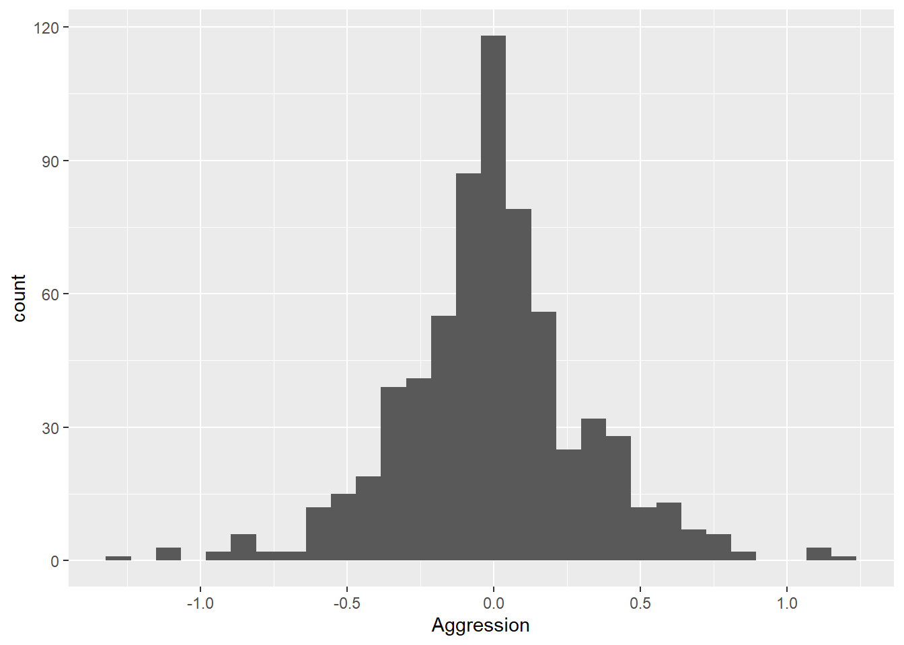
We could do this for each of our variables or we could try something a little fancier by using the pivot_longer() function to make a longer dataframe and plot everything at once
First, create the long dataframe. After running this command, it’s a good idea to view the new data frame to make sure this did what you intended
ca_df_long <- ca_df %>%
pivot_longer(cols = Aggression:Parenting_Style, names_to = "variable_name", values_to = "variable_value")After making sure everything looks in order, run the same plot command with the addition of a facet.
Note that the fill = variable_name tells R to color the plot with different colors by variable_name and the theme(…) tells R to get rid of the legend that automatically shows up
ca_df_long %>%
ggplot(aes(x = variable_value, fill = variable_name)) +
geom_histogram() +
facet_wrap(variable_name ~.) +
theme(legend.position = "none")## `stat_bin()` using `bins = 30`. Pick better value with `binwidth`.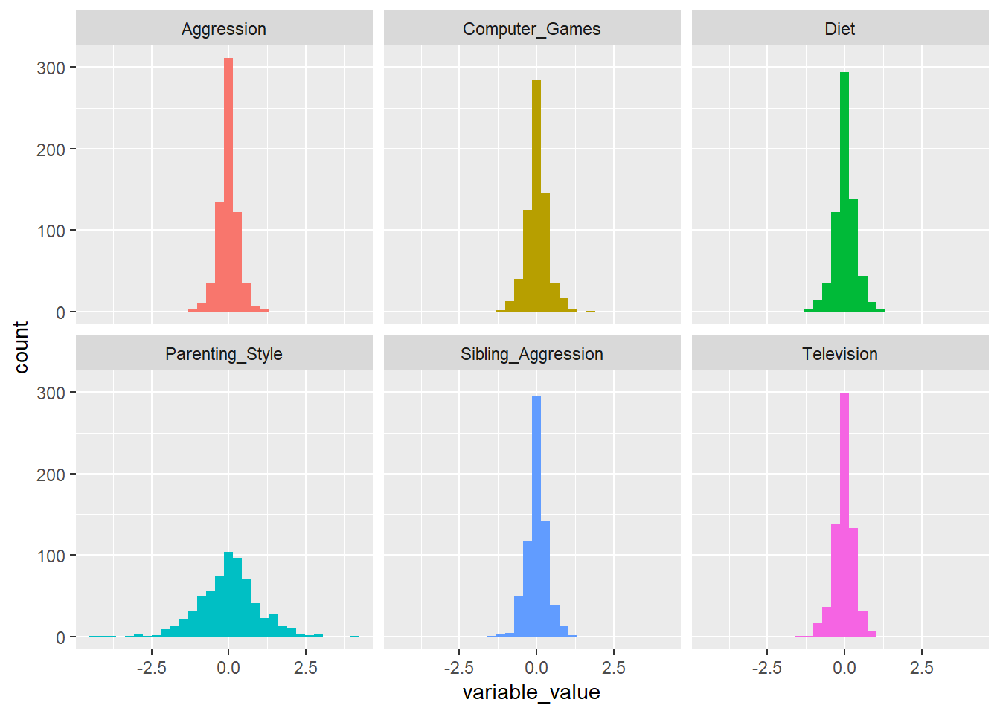
From this we should be able to see that everything is normally distributed and appears to be standardized
Let’s try a different kind of visualization: the empirical cumulative distribution function (eCDF) (sounds fancy, but it’s not bad)
ca_df_long %>%
ggplot(aes(x = variable_value)) +
stat_ecdf(geom = "point") +
facet_wrap(variable_name ~.) 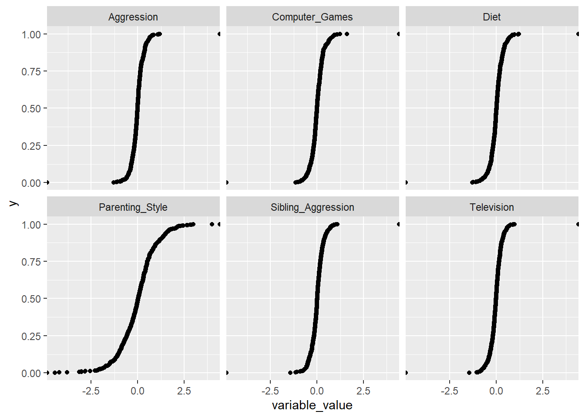
It looks like a bunch of distorted s shapes. In order to understand what is going on here, we should take a brief detour into the world of cumulative distribution functions (CDFs), eCDFs, and eventually QQ plots. This detour is at the end of the markdown file.
Now we can try a third way of visualizing our data - QQ plots!
As before, we can plot each variable with separate calls or plot them all together with the long data frame
ca_df %>%
ggplot(aes(sample=Aggression)) +
stat_qq() +
stat_qq_line()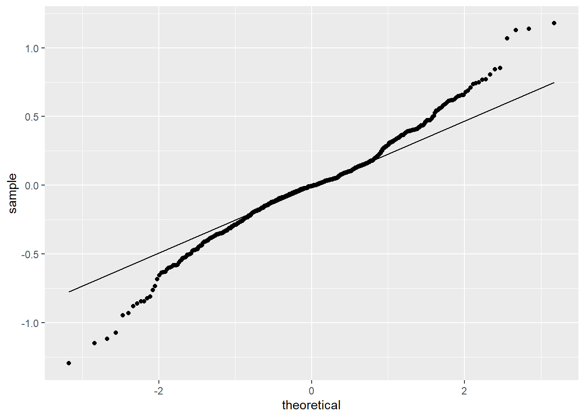
ca_df_long %>%
ggplot(aes(sample=variable_value)) +
stat_qq() +
stat_qq_line() +
facet_wrap(variable_name ~ .)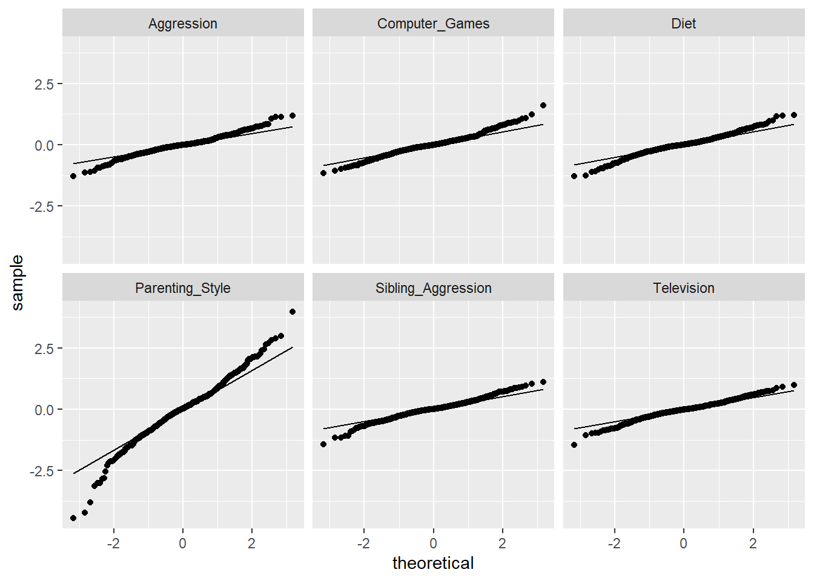
8.1 Multiple regression
Let’s create a model of child aggression as a function of parenting style and sibling aggression
model_fam <- lm(Aggression ~ Parenting_Style + Sibling_Aggression, data = ca_df)Run the summary on the model
summary(model_fam)##
## Call:
## lm(formula = Aggression ~ Parenting_Style + Sibling_Aggression,
## data = ca_df)
##
## Residuals:
## Min 1Q Median 3Q Max
## -1.09755 -0.17180 0.00092 0.15405 1.23037
##
## Coefficients:
## Estimate Std. Error t value Pr(>|t|)
## (Intercept) -0.005784 0.012065 -0.479 0.632
## Parenting_Style 0.061984 0.012257 5.057 5.51e-07 ***
## Sibling_Aggression 0.093409 0.037505 2.491 0.013 *
## ---
## Signif. codes: 0 '***' 0.001 '**' 0.01 '*' 0.05 '.' 0.1 ' ' 1
##
## Residual standard error: 0.3113 on 663 degrees of freedom
## Multiple R-squared: 0.05325, Adjusted R-squared: 0.05039
## F-statistic: 18.64 on 2 and 663 DF, p-value: 1.325e-08This will be helpful later when we want to plot the residuals of the model.
Let’s create another model of child aggression as a function of computer games and television.
model_screens <- lm(Aggression ~ Computer_Games + Television, data = ca_df)
summary(model_screens)##
## Call:
## lm(formula = Aggression ~ Computer_Games + Television, data = ca_df)
##
## Residuals:
## Min 1Q Median 3Q Max
## -1.05234 -0.15191 -0.00512 0.15156 1.24062
##
## Coefficients:
## Estimate Std. Error t value Pr(>|t|)
## (Intercept) -0.002879 0.012132 -0.237 0.812526
## Computer_Games 0.153874 0.035845 4.293 2.03e-05 ***
## Television 0.135263 0.039546 3.420 0.000664 ***
## ---
## Signif. codes: 0 '***' 0.001 '**' 0.01 '*' 0.05 '.' 0.1 ' ' 1
##
## Residual standard error: 0.3115 on 663 degrees of freedom
## Multiple R-squared: 0.05149, Adjusted R-squared: 0.04862
## F-statistic: 17.99 on 2 and 663 DF, p-value: 2.455e-08Now let’s see what the full model looks like with all five predictors
model_all <- lm(Aggression ~ Parenting_Style + Sibling_Aggression + Diet + Computer_Games + Television,
data = ca_df)
summary(model_all)##
## Call:
## lm(formula = Aggression ~ Parenting_Style + Sibling_Aggression +
## Diet + Computer_Games + Television, data = ca_df)
##
## Residuals:
## Min 1Q Median 3Q Max
## -1.12629 -0.15253 -0.00421 0.15222 1.17669
##
## Coefficients:
## Estimate Std. Error t value Pr(>|t|)
## (Intercept) -0.004988 0.011983 -0.416 0.677350
## Parenting_Style 0.056648 0.014557 3.891 0.000110 ***
## Sibling_Aggression 0.081684 0.038780 2.106 0.035550 *
## Diet -0.109054 0.038076 -2.864 0.004315 **
## Computer_Games 0.142161 0.036920 3.851 0.000129 ***
## Television 0.032916 0.046057 0.715 0.475059
## ---
## Signif. codes: 0 '***' 0.001 '**' 0.01 '*' 0.05 '.' 0.1 ' ' 1
##
## Residual standard error: 0.3071 on 660 degrees of freedom
## Multiple R-squared: 0.08258, Adjusted R-squared: 0.07563
## F-statistic: 11.88 on 5 and 660 DF, p-value: 5.025e-11We can get the output from the summary() function but as a tibble instead:
broom::tidy(model_all, conf.int = TRUE)## # A tibble: 6 x 7
## term estimate std.error statistic p.value conf.low conf.high
## <chr> <dbl> <dbl> <dbl> <dbl> <dbl> <dbl>
## 1 (Intercept) -0.00499 0.0120 -0.416 0.677 -0.0285 0.0185
## 2 Parenting_Style 0.0566 0.0146 3.89 0.000110 0.0281 0.0852
## 3 Sibling_Aggression 0.0817 0.0388 2.11 0.0355 0.00554 0.158
## 4 Diet -0.109 0.0381 -2.86 0.00432 -0.184 -0.0343
## 5 Computer_Games 0.142 0.0369 3.85 0.000129 0.0697 0.215
## 6 Television 0.0329 0.0461 0.715 0.475 -0.0575 0.123We can also get summary statistics like the R^2, F-statistics, and AIC from the glance() function in the Broom package
broom::glance(model_all)## # A tibble: 1 x 12
## r.squared adj.r.squared sigma statistic p.value df logLik AIC BIC
## <dbl> <dbl> <dbl> <dbl> <dbl> <dbl> <dbl> <dbl> <dbl>
## 1 0.0826 0.0756 0.307 11.9 5.02e-11 5 -156. 325. 357.
## # ... with 3 more variables: deviance <dbl>, df.residual <int>, nobs <int>Let’s stop here to interpret what the model output is telling us(specifically, the coefficient estimates, the standard errors, the p values, and the R^2 values).
Notice the Television p value and standard errors (especially how the estimate is so close to zero, and its 95% confidence interval crosses 0)
We can also have R handle factors automatically in a regression model for us.
First, we will generate a new factor for the child aggression data - the handedness of the child (left vs right).
This code generates a random handedness for each of the 666 students and assigns it to a new column in ca_df
handed_levels <- c("left", "right")
handed_vector <- sample(handed_levels, size = nrow(ca_df), replace = TRUE, prob = c(0.4, 0.6))
ca_df$Handedness <- handed_vectorCheck to make sure we have all the predictor names correct to add into the linear model.
names(ca_df)## [1] "Aggression" "Television" "Computer_Games"
## [4] "Sibling_Aggression" "Diet" "Parenting_Style"
## [7] "Handedness"model_all_3 <- lm(Aggression ~ Parenting_Style + Sibling_Aggression + Television + Computer_Games + Diet + Handedness, data = ca_df)Check the model summary and notice how the Handedness predictor variable was handled.
summary(model_all_3)##
## Call:
## lm(formula = Aggression ~ Parenting_Style + Sibling_Aggression +
## Television + Computer_Games + Diet + Handedness, data = ca_df)
##
## Residuals:
## Min 1Q Median 3Q Max
## -1.13402 -0.14805 0.00091 0.14796 1.16761
##
## Coefficients:
## Estimate Std. Error t value Pr(>|t|)
## (Intercept) -0.01928 0.01871 -1.031 0.303013
## Parenting_Style 0.05668 0.01456 3.893 0.000109 ***
## Sibling_Aggression 0.08249 0.03879 2.127 0.033810 *
## Television 0.03487 0.04610 0.756 0.449685
## Computer_Games 0.14284 0.03693 3.868 0.000121 ***
## Diet -0.10886 0.03808 -2.859 0.004385 **
## Handednessright 0.02416 0.02428 0.995 0.320032
## ---
## Signif. codes: 0 '***' 0.001 '**' 0.01 '*' 0.05 '.' 0.1 ' ' 1
##
## Residual standard error: 0.3071 on 659 degrees of freedom
## Multiple R-squared: 0.08396, Adjusted R-squared: 0.07562
## F-statistic: 10.07 on 6 and 659 DF, p-value: 1.166e-10lm(Aggression ~ ., data=ca_df)##
## Call:
## lm(formula = Aggression ~ ., data = ca_df)
##
## Coefficients:
## (Intercept) Television Computer_Games Sibling_Aggression
## -0.01928 0.03487 0.14284 0.08249
## Diet Parenting_Style Handednessright
## -0.10886 0.05668 0.024168.1.1 Assumption testing
Note: A lot of the things we are doing here can be accomplished with the augment() function in the broom package
Check for correlation between adjacent residual terms using Durbin-Watson test
dwt(model_all)## lag Autocorrelation D-W Statistic p-value
## 1 0.04218005 1.912808 0.28
## Alternative hypothesis: rho != 0Check for multicollinearity.
car::vif(model_all)## Parenting_Style Sibling_Aggression Diet Computer_Games
## 1.494296 1.132618 1.160466 1.122719
## Television
## 1.435525Now let’s go back and check for influential cases following the procedure Field does in the textbook.
ca_df$residuals <- resid(model_all) # notice how this is the same as looking at View(model_all) and then residuals or model_all$residuals
#model_all$residuals
ca_df$standardized.residuals <- rstandard(model_all)
ca_df$studentized.residuals <- rstudent(model_all)
ca_df$cooks.distance <- cooks.distance(model_all)
ca_df$dfbeta <- dfbeta(model_all)
ca_df$dffit <- dffits(model_all)
ca_df$leverage <- hatvalues(model_all)
ca_df$covariance.ratios <- covratio(model_all)Now that we have all of the extra model fit statistics calculated, we can add a new olumn using a different method than what he does in the textbook (but this accomplishes the same task).
We are using a combination of mutate() and case_when() instead of the traditional logical test subsetting that we see in the bookon pp. 289-290
ca_df <- ca_df %>%
mutate(large.residual = case_when(standardized.residuals > 2 | standardized.residuals < -2 ~ TRUE,
abs(standardized.residuals) <= 2 ~ FALSE))Now let’s just look at the observations where there was a large residual (absolute value > 2)
ca_df %>% filter(large.residual == TRUE) %>% head()## Aggression Television Computer_Games Sibling_Aggression Diet
## 1 0.7711534 -0.03287184 0.70991822 0.576836667 -0.0229903
## 2 -0.9309839 -0.14695730 0.58503832 0.143914123 0.1341567
## 3 0.8437696 -0.53337187 0.62674291 0.006193792 -0.0542531
## 4 -0.8604237 -0.32734996 -0.10228524 0.088454410 0.3403472
## 5 0.7374707 0.05104538 0.06804261 0.742478946 0.3607529
## 6 0.6158280 -0.17945254 -0.14381635 0.337002793 -0.5992525
## Parenting_Style Handedness residuals standardized.residuals
## 1 -1.2481665 right 0.6973813 2.289855
## 2 -1.0470961 right -0.9421375 -3.081966
## 3 0.2386578 right 0.7572738 2.484122
## 4 -0.6988965 left -0.7606374 -2.483667
## 5 0.9243197 right 0.6574374 2.152417
## 6 -1.0334894 right 0.6128345 2.006389
## studentized.residuals cooks.distance dfbeta.(Intercept)
## 1 2.297263 0.014610960 0.0010048327
## 2 -3.102033 0.014474124 -0.0013336489
## 3 2.493925 0.015185553 0.0008375093
## 4 -2.493465 0.005595170 -0.0010247662
## 5 2.158374 0.008347004 0.0008799517
## 6 2.011011 0.007252602 0.0009296294
## dfbeta.Parenting_Style dfbeta.Sibling_Aggression dfbeta.Diet
## 1 -0.0022102310 0.0053377408 -0.0015602060
## 2 0.0022877988 -0.0008058492 -0.0011872151
## 3 0.0016068696 0.0002508274 -0.0028943101
## 4 0.0006636867 -0.0011984511 -0.0042173119
## 5 0.0008756410 0.0069052922 0.0014075292
## 6 -0.0005401040 0.0047888699 -0.0054530647
## dfbeta.Computer_Games dfbeta.Television dffit leverage
## 1 0.0067966200 0.0013345865 0.2970419 0.016444209
## 2 -0.0079629954 -0.0003344591 -0.2966131 0.009060145
## 3 0.0072143563 -0.0098994502 0.3030411 0.014550253
## 4 0.0015183740 0.0029152017 -0.1839467 0.005412783
## 5 -0.0015476206 -0.0021915865 0.2244095 0.010694476
## 6 -0.0004611714 -0.0010521222 0.2090845 0.010694131
## covariance.ratios large.residual
## 1 0.9780649 TRUE
## 2 0.9335336 TRUE
## 3 0.9679182 TRUE
## 4 0.9590456 TRUE
## 5 0.9778335 TRUE
## 6 0.9832825 TRUEThere’s a problem here because we don’t preserve observation numbers. In general, it might be a good idea to give each observation an ID with something like
dim(ca_df)[1]## [1] 666ca_df <- ca_df %>%
mutate(ID = seq(1:dim(ca_df)[1]))In the tidyverse, there is an even simpler way to do this with the rowid_to_column() function!
ca_df <- ca_df %>%
rowid_to_column(var = "participant_id")Now we can run the filter again and see which observations have large residuals
ca_df %>% filter(large.residual == TRUE) %>% view()Plot the residuals against the fitted values
ca_df$fitted <- model_all$fitted.valuesFirst, plot the distribution of the residuals by themselves
histogram <- ca_df %>%
ggplot(aes(x = studentized.residuals)) +
geom_histogram(aes(y = ..density..)) +
labs(x = "Studentized Residuals",
y = "Density")
histogram## `stat_bin()` using `bins = 30`. Pick better value with `binwidth`.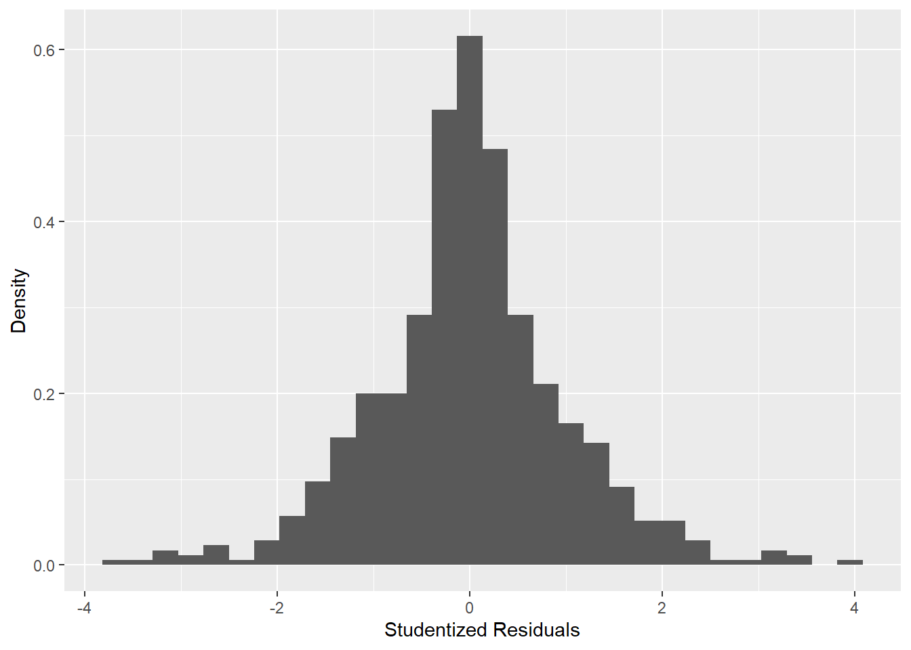
Now let’s add a normal density on top of that for comparison
histogram + stat_function(fun = dnorm,
args = list(mean = mean(ca_df$studentized.residuals, na.rm = TRUE),
sd = sd(ca_df$studentized.residuals, na.rm = TRUE)),
color = "blue", size = 1)## `stat_bin()` using `bins = 30`. Pick better value with `binwidth`.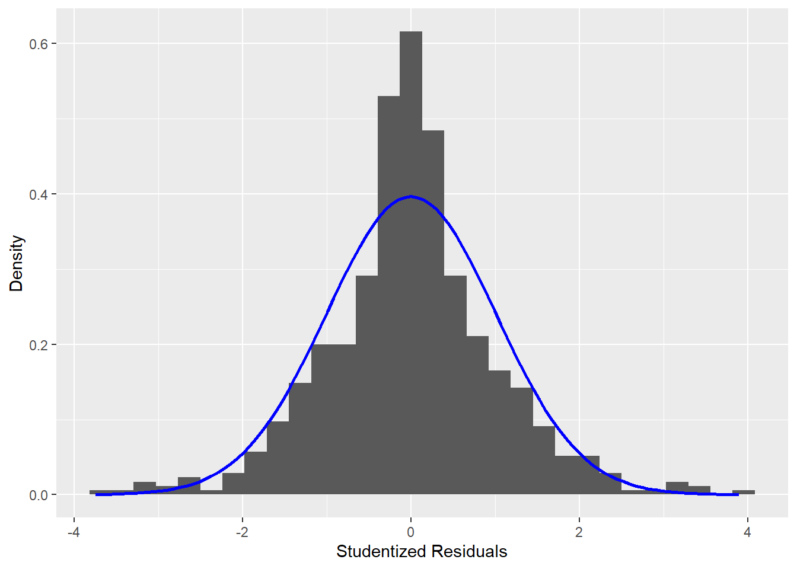
Second, plot the residuals against the fitted values to make sure there are no systematic patterns
ca_df %>%
ggplot(aes(x = fitted, y = studentized.residuals)) +
geom_point() +
geom_smooth(method = "lm") +
labs(x = "Fitted Residual",
y = "Studentized Residual")## `geom_smooth()` using formula 'y ~ x'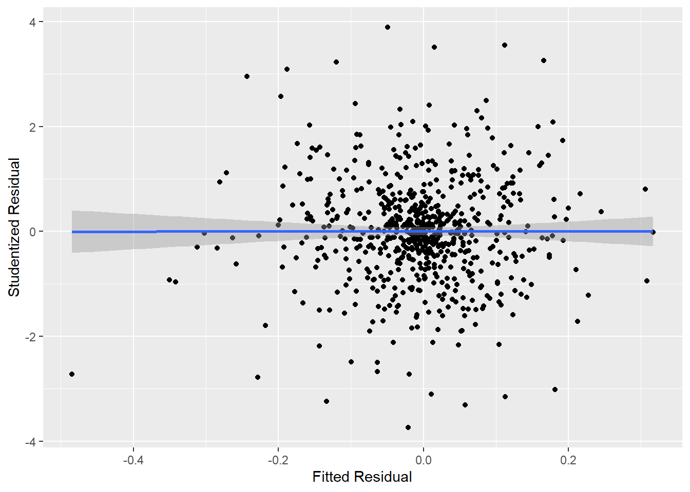
We can also skip all the fancy code from the book and use the plot() function on the model.
R knows that this means we want to plot four fit plots
par(mfrow=c(2,2)) # this changes the arrangement for the plots to show two rows and two columns of plotsplot(model_all)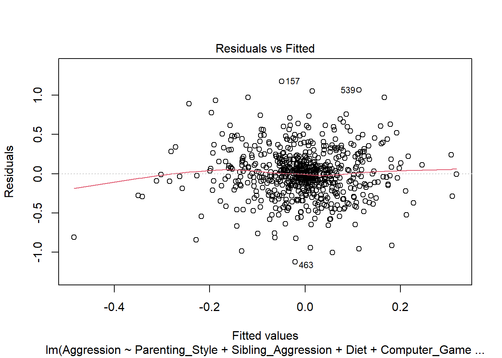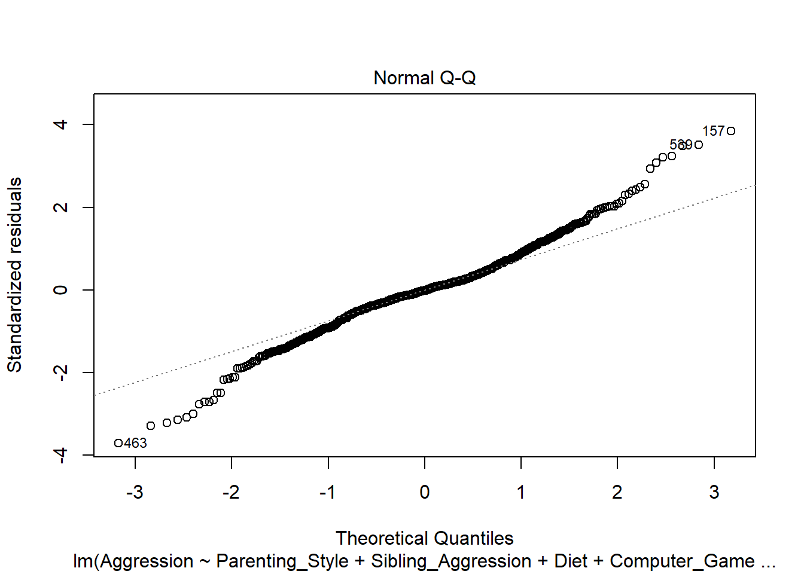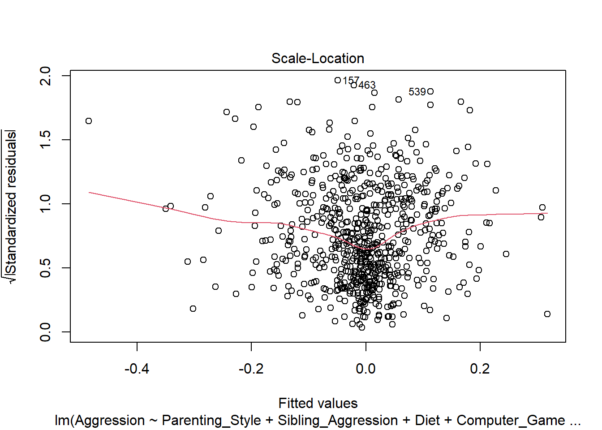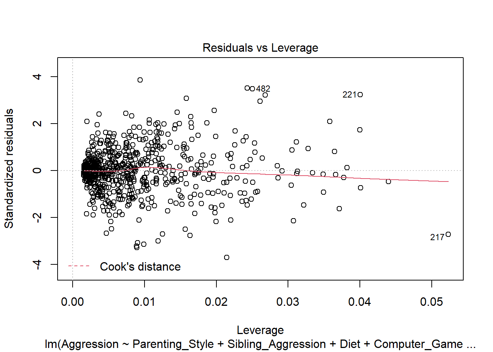
par(mfrow=c(1,1)) # this changes the plotting arrangement back to the default of one plot at a timeNote that we could also create a model that uses all our covariates as predictors with the following call
model_all_2 <- lm(Aggression ~ ., data=ca_df)Inspect the results to make sure it is giving the same results as before
plot(model_all_2)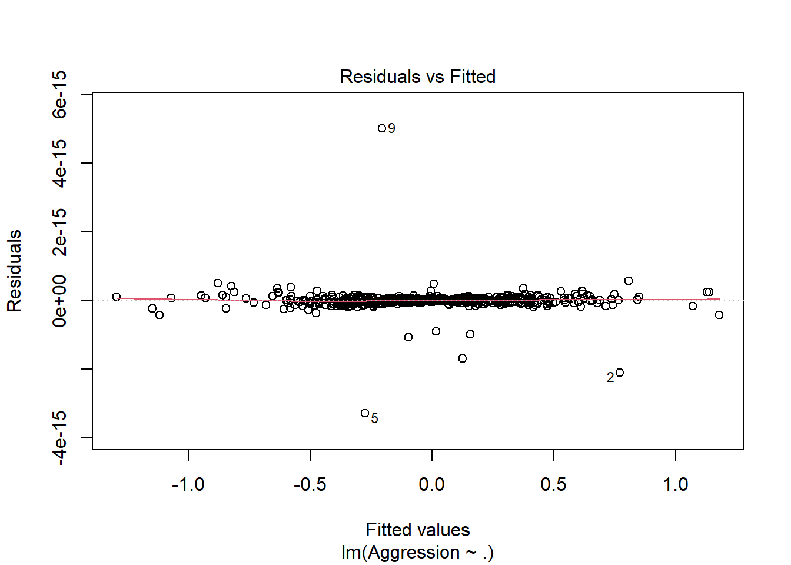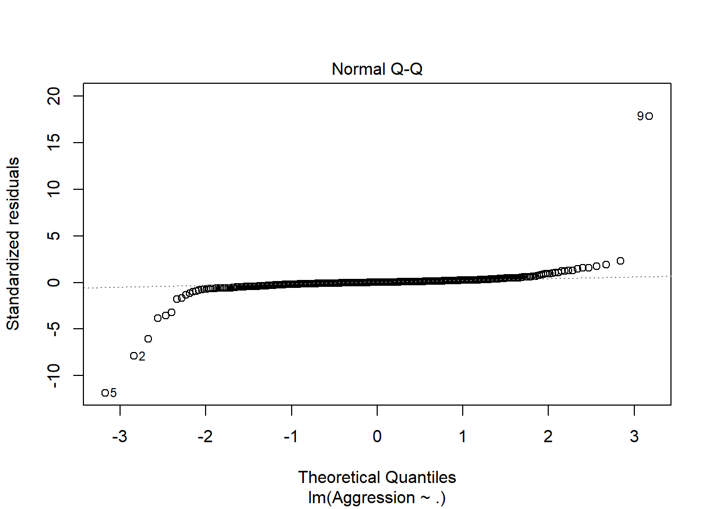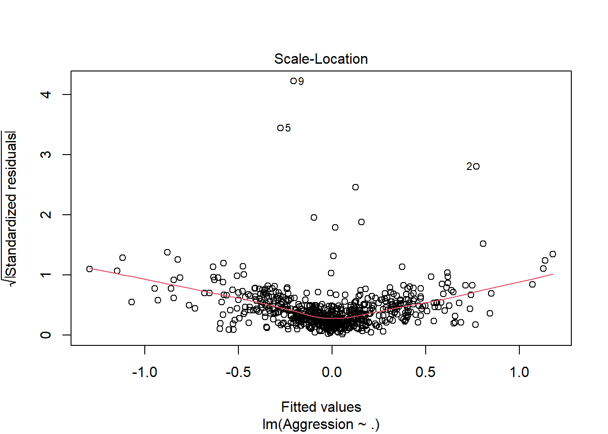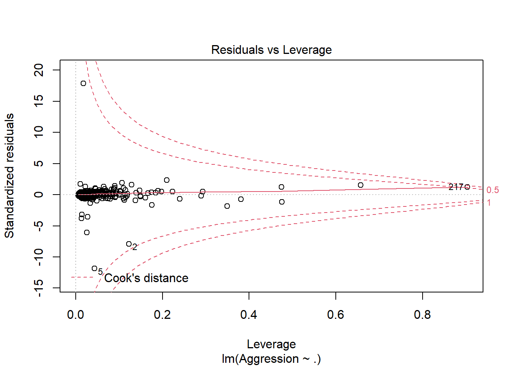
summary(model_all_2)##
## Call:
## lm(formula = Aggression ~ ., data = ca_df)
##
## Residuals:
## Min 1Q Median 3Q Max
## -1.315e-14 -3.580e-17 2.700e-17 1.020e-16 1.050e-15
##
## Coefficients: (2 not defined because of singularities)
## Estimate Std. Error t value Pr(>|t|)
## (Intercept) -4.988e-03 3.030e-15 -1.646e+12 < 2e-16 ***
## participant_id 6.951e-19 1.151e-19 6.039e+00 2.63e-09 ***
## Television 3.292e-02 8.586e-17 3.834e+14 < 2e-16 ***
## Computer_Games 1.422e-01 6.891e-17 2.063e+15 < 2e-16 ***
## Sibling_Aggression 8.168e-02 7.221e-17 1.131e+15 < 2e-16 ***
## Diet -1.091e-01 7.132e-17 -1.529e+15 < 2e-16 ***
## Parenting_Style 5.665e-02 2.717e-17 2.085e+15 < 2e-16 ***
## Handednessright -3.512e-17 4.504e-17 -7.800e-01 0.436
## residuals 1.000e+00 5.802e-12 1.724e+11 < 2e-16 ***
## standardized.residuals -7.295e-13 3.468e-12 -2.100e-01 0.833
## studentized.residuals -1.118e-14 8.372e-15 -1.335e+00 0.182
## cooks.distance 6.906e-15 7.853e-15 8.790e-01 0.379
## dfbeta(Intercept) 7.756e-10 3.659e-09 2.120e-01 0.832
## dfbetaParenting_Style 2.518e-14 4.208e-14 5.980e-01 0.550
## dfbetaSibling_Aggression 6.411e-12 3.028e-11 2.120e-01 0.832
## dfbetaDiet 9.017e-12 4.252e-11 2.120e-01 0.832
## dfbetaComputer_Games 8.049e-12 3.799e-11 2.120e-01 0.832
## dfbetaTelevision -2.139e-11 1.009e-10 -2.120e-01 0.832
## dffit 2.795e-15 7.852e-15 3.560e-01 0.722
## leverage -2.882e-15 4.954e-15 -5.820e-01 0.561
## covariance.ratios 6.832e-16 3.017e-15 2.260e-01 0.821
## large.residualTRUE -6.377e-17 1.716e-16 -3.720e-01 0.710
## ID NA NA NA NA
## fitted NA NA NA NA
## ---
## Signif. codes: 0 '***' 0.001 '**' 0.01 '*' 0.05 '.' 0.1 ' ' 1
##
## Residual standard error: 5.624e-16 on 644 degrees of freedom
## Multiple R-squared: 1, Adjusted R-squared: 1
## F-statistic: 1.021e+31 on 21 and 644 DF, p-value: < 2.2e-16Check how augment() works and which parts of the above it replicates
augmented_model_all <- augment(model_all)ca_df_long %>%
ggplot(aes(x = variable_value, fill = variable_name)) +
geom_histogram(position = "identity", alpha = 0.5)## `stat_bin()` using `bins = 30`. Pick better value with `binwidth`.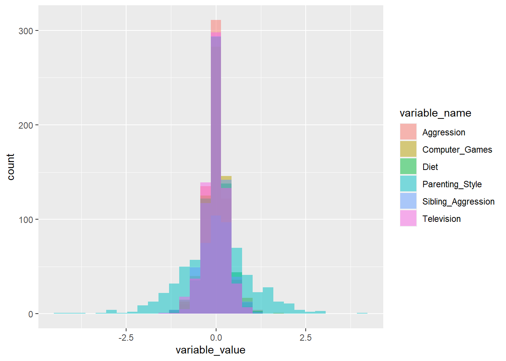
8.1.2 Detour: Cumulative Distribution Function (CDF), empirical CDF, and QQ Plot Discussion
Our goal here is to visualize the cumulative distribution function for a normal distribution as a stepping stone toward undestanding QQ plots. We will use plots of the empirical cumulative distribution function (eCDF)
As a way to visualize our data. Although we have not discussed eCDFs before, they are another tool you can use to visualize the distribution of quantitative data.
We will also look at the effect of sample size on the kinds of plots that we may make when visualizing the distribution of data.
First, let’s generate some data to help us see what these concepts are all about.
Note that We are generating data to make things easier on ourselves - we know the underlying data-generating process. So that lets us form an expectation of what should happen. These kinds of toy examples can be helpful for building an intuition about these concepts that we can then use in our own work.
df_1 <- tibble(x = round(rnorm(n = 25, mean = 0, sd = 1), digits = 1), samp_size = rep(x = 25, times = 25))
df_2 <- tibble(x = round(rnorm(n = 50, mean = 0, sd = 1), digits = 1), samp_size = rep(x = 50, times = 50))
df_3 <- tibble(x = round(rnorm(n = 100, mean = 0, sd = 1), digits = 1), samp_size = rep(x = 100, times = 100))
df_4 <- tibble(x = round(rnorm(n = 200, mean = 0, sd = 1), digits = 1), samp_size = rep(x = 200, times = 200))
df_5 <- tibble(x = round(rnorm(n = 500, mean = 0, sd = 1), digits = 1), samp_size = rep(x = 500, times = 500))Combine the generated data together into one data frame to make it easy to plot everything in one ggplot call.
sample_df <- bind_rows(df_1, df_2, df_3, df_4, df_5)Look at the empirical CDFs
sample_df %>%
ggplot(aes(x)) +
stat_ecdf(geom = "point") +
facet_grid(samp_size~.)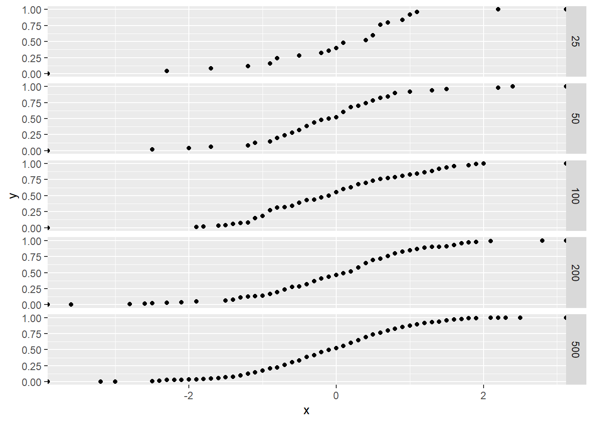
sample_df %>%
ggplot(aes(x)) +
geom_histogram() +
facet_grid(samp_size~.)## `stat_bin()` using `bins = 30`. Pick better value with `binwidth`.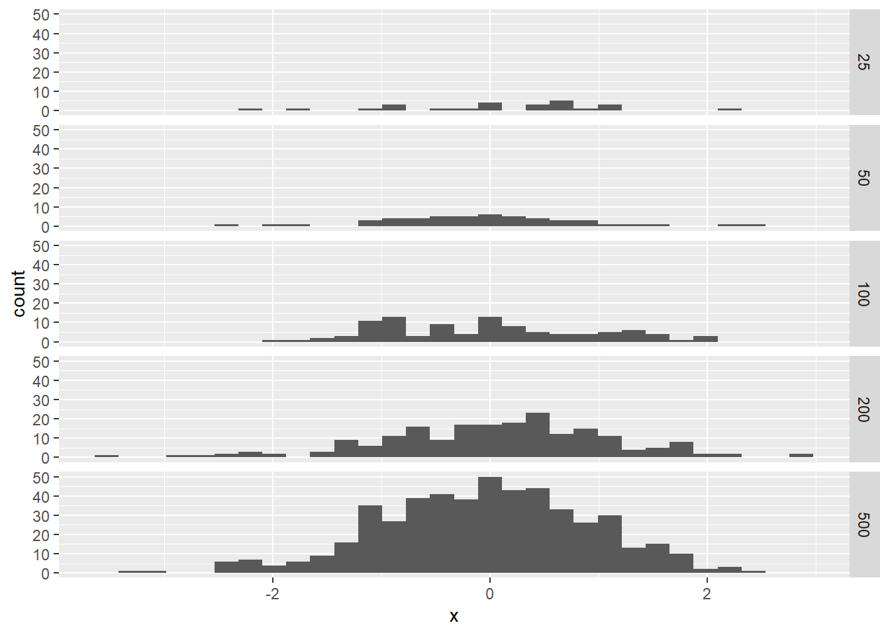
In class, this should lead to a discussion about how to find quantiles now let’s try to look at some QQ plots.
df_1 %>%
ggplot(aes(sample=x)) +
stat_qq() +
stat_qq_line()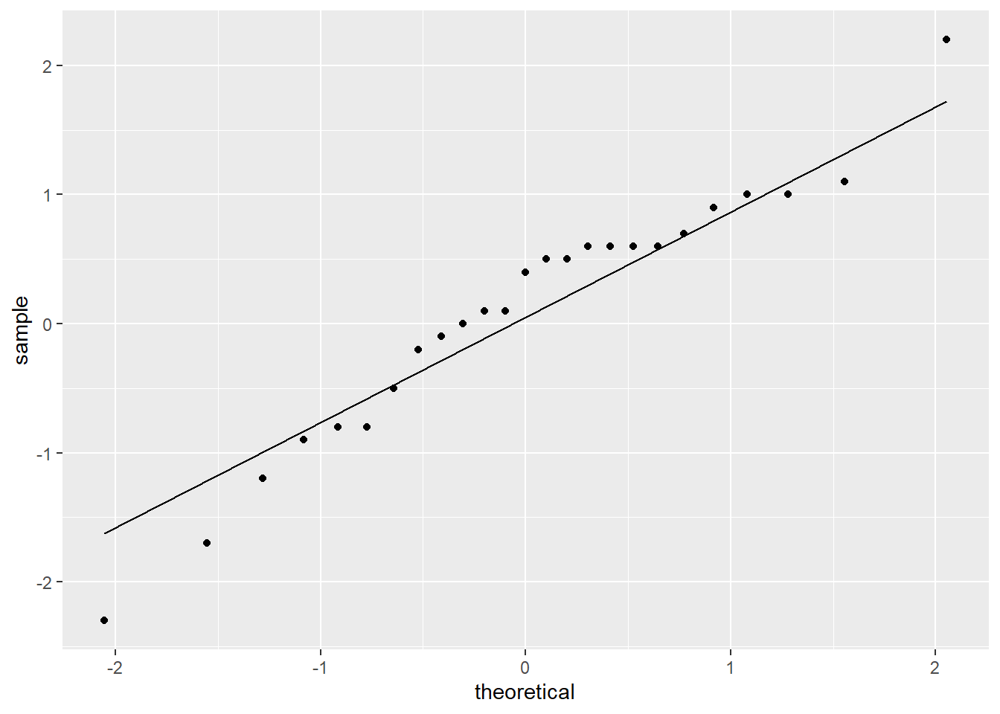
Let’s try to wrap our heads around what is going on by looking at sorted versions of df_1 values
head(df_1 %>% arrange(x))## # A tibble: 6 x 2
## x samp_size
## <dbl> <dbl>
## 1 -1.7 25
## 2 -1.3 25
## 3 -1.1 25
## 4 -1.1 25
## 5 -1.1 25
## 6 -0.6 25Let’s also look at the other end of the dataframe. We can do this either using arrange(desc(x)) or tail instead of head Confirm that they’re basically two ways of accomplishing the same objective.
head(df_1 %>% arrange(desc(x)))## # A tibble: 6 x 2
## x samp_size
## <dbl> <dbl>
## 1 2.4 25
## 2 1.6 25
## 3 1.6 25
## 4 1.5 25
## 5 1.2 25
## 6 1.2 25tail(df_1 %>% arrange(x))## # A tibble: 6 x 2
## x samp_size
## <dbl> <dbl>
## 1 1.2 25
## 2 1.2 25
## 3 1.5 25
## 4 1.6 25
## 5 1.6 25
## 6 2.4 25End detour
8.1.3 Generating data for student happiness exercise.
We are going to student happiness scores on a scale from 0 to 100 as a function of their time spent outdoors, time spent on Zoom, class standing, and department.
pop_size <- 5000
sample_size <- 200
pop_df <- tibble(standing = rep(c("undergrad", "masters", "phd"),
times = c(pop_size/2, pop_size/4, pop_size/4)))
pop_df$discipline <- rep(c("mechanical", "civil", "electrical"),
length.out = pop_size)
pop_df$min_outdoors <- round(runif(n = pop_size, min = 0, max = 300), 0)
pop_df$min_zoom <- round(runif(n = pop_size, min = 0, max = 400), 0)
pop_df <- pop_df %>%
mutate(undergrad = case_when(standing == "undergrad" ~ 1,
TRUE ~ 0),
masters = case_when(standing == "masters" ~ 1,
TRUE ~ 0),
phd = case_when(standing == "phd" ~ 1,
TRUE ~ 0),
civil = case_when(discipline == "civil" ~ 1,
TRUE ~ 0),
mechanical = case_when(discipline == "mechanical" ~ 1,
TRUE ~ 0),
electrical = case_when(discipline == "electrical" ~ 1,
TRUE ~ 0))With the predictors generated, we can now generate the happiness scores.
#pop_df <- pop_df %>%
# mutate(happiness = 50 + -.2*(min_zoom+runif(n = 1, min = 10, max = 30)) + .1 * min_outdoors + 4*civil -.3 * mechanical)
b_0 <- 50
b_out <- 0.03
b_zoom <- -0.05
b_civ <- 6
b_mech <- 2
b_ele <- -3
b_under <- 5
b_masters <- -2
b_phd <- 10
pop_df$happiness <- b_0 + b_out*(pop_df$min_outdoors + rnorm(pop_size, 0, 40)) +
b_zoom*(pop_df$min_zoom + rnorm(pop_size, 0, 40)) +
b_civ*(pop_df$civil + rnorm(pop_size, 0, 2)) +
b_mech*pop_df$mechanical +
b_ele*pop_df$electrical + b_under * pop_df$undergrad +
b_masters*pop_df$masters +
b_phd*pop_df$phd + round(rnorm(n = pop_size, mean = 0, sd = 10), 0)We will save the full population dataset. That is what we will start with in class.
pop_df %>% write_csv("student_happiness.csv")Now we create a sample of students by sampling from the population dataframe.
samp_df <- sample_n(pop_df, size = 200)On the modeling side, we can first start with a very simple model with only one predictor.
happiness_zoom <- lm(happiness ~ min_zoom, data = samp_df)
summary(happiness_zoom)##
## Call:
## lm(formula = happiness ~ min_zoom, data = samp_df)
##
## Residuals:
## Min 1Q Median 3Q Max
## -48.875 -9.765 -0.362 9.671 50.416
##
## Coefficients:
## Estimate Std. Error t value Pr(>|t|)
## (Intercept) 62.95684 2.46350 25.556 < 2e-16 ***
## min_zoom -0.05648 0.01062 -5.318 2.82e-07 ***
## ---
## Signif. codes: 0 '***' 0.001 '**' 0.01 '*' 0.05 '.' 0.1 ' ' 1
##
## Residual standard error: 16.5 on 198 degrees of freedom
## Multiple R-squared: 0.125, Adjusted R-squared: 0.1205
## F-statistic: 28.28 on 1 and 198 DF, p-value: 2.824e-07Next, we can look at what happens with a more complex model with multiple predictors. Pay attention to how the \(R^2\) value changes.
happiness_all <- lm(happiness ~ min_outdoors + min_zoom + civil + mechanical + electrical + undergrad + masters + phd, data = samp_df)
summary(happiness_all)##
## Call:
## lm(formula = happiness ~ min_outdoors + min_zoom + civil + mechanical +
## electrical + undergrad + masters + phd, data = samp_df)
##
## Residuals:
## Min 1Q Median 3Q Max
## -44.974 -9.235 -0.783 8.206 39.952
##
## Coefficients: (2 not defined because of singularities)
## Estimate Std. Error t value Pr(>|t|)
## (Intercept) 62.45248 3.78326 16.508 < 2e-16 ***
## min_outdoors 0.02195 0.01257 1.746 0.08232 .
## min_zoom -0.05887 0.00973 -6.050 7.39e-09 ***
## civil 7.57064 2.60481 2.906 0.00408 **
## mechanical 7.05636 2.71628 2.598 0.01011 *
## electrical NA NA NA NA
## undergrad -6.78118 2.63389 -2.575 0.01079 *
## masters -15.67151 3.02978 -5.172 5.76e-07 ***
## phd NA NA NA NA
## ---
## Signif. codes: 0 '***' 0.001 '**' 0.01 '*' 0.05 '.' 0.1 ' ' 1
##
## Residual standard error: 15.06 on 193 degrees of freedom
## Multiple R-squared: 0.2896, Adjusted R-squared: 0.2675
## F-statistic: 13.11 on 6 and 193 DF, p-value: 1.987e-12An alternative way of writing the full model
happiness_all <- lm(happiness ~ min_outdoors + min_zoom + discipline + standing, data = samp_df)
summary(happiness_all)##
## Call:
## lm(formula = happiness ~ min_outdoors + min_zoom + discipline +
## standing, data = samp_df)
##
## Residuals:
## Min 1Q Median 3Q Max
## -44.974 -9.235 -0.783 8.206 39.952
##
## Coefficients:
## Estimate Std. Error t value Pr(>|t|)
## (Intercept) 54.35161 3.84535 14.134 < 2e-16 ***
## min_outdoors 0.02195 0.01257 1.746 0.082322 .
## min_zoom -0.05887 0.00973 -6.050 7.39e-09 ***
## disciplineelectrical -7.57064 2.60481 -2.906 0.004084 **
## disciplinemechanical -0.51428 2.67200 -0.192 0.847577
## standingphd 15.67151 3.02978 5.172 5.76e-07 ***
## standingundergrad 8.89034 2.63742 3.371 0.000905 ***
## ---
## Signif. codes: 0 '***' 0.001 '**' 0.01 '*' 0.05 '.' 0.1 ' ' 1
##
## Residual standard error: 15.06 on 193 degrees of freedom
## Multiple R-squared: 0.2896, Adjusted R-squared: 0.2675
## F-statistic: 13.11 on 6 and 193 DF, p-value: 1.987e-12